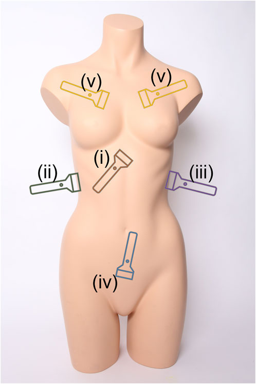

Setup & Knobology
Begin every exam by confirming the correct patient and indication. Use a high‑level disinfection sheath or sterile cover for the probe and apply gel. Select the appropriate transducer and adjust depth and gain before scanning.
Transducers

- Curvilinear (2–5 MHz): broad footprint for deep structures. Used for eFAST, AAA and lung pathologies.
- Phased array (1–5 MHz): small footprint for imaging between ribs; ideal for cardiac and eFAST windows.
- Linear (5–13 MHz): high resolution for superficial structures; used for vascular access and pleural line imaging.
Probe orientation and image optimisation
- Indicator direction: The probe’s indicator (notch) corresponds to the marker on the screen. In longitudinal views point the indicator towards the patient’s head; in transverse views point it towards the patient’s right side.
- Depth: Adjust so your target fills two‑thirds of the screen. Too much depth wastes field of view; too little may cut off structures.
- Gain: Increase until structures are visible without saturating the image; decrease if the image appears over‑bright.
- Manipulation: Slide (translate) to a new window; tilt/angle to sweep through structures; rock (heel‑toe) to centre the target; rotate to switch between longitudinal and transverse planes.
eFAST (Extended Focused Assessment with Sonography for Trauma)
The eFAST exam screens trauma patients for free fluid in the peritoneum, thorax and pericardium and for pneumothorax. Use a curvilinear or phased array probe. Keep the patient supine.
Right Upper Quadrant (RUQ)
- Use a curvilinear probe; indicator towards the patient’s head.
- Place the probe at the mid‑axillary line between the 8th and 11th ribs and angle slightly posteriorly. Identify the diaphragm, liver and right kidney. Morison’s pouch lies between the liver and kidney; free fluid collects here.
Left Upper Quadrant (LUQ)
- Probe indicator cranial. Position more posterior than the RUQ because the stomach lies anteriorly on the left.
- Identify the spleen, diaphragm and left kidney. Check the perisplenic recess and splenorenal recess for anechoic fluid.
Pelvic View
- Start transversely just above the pubic symphysis with the indicator to the patient’s right; use the bladder as an acoustic window.
- Rotate 90° to obtain a longitudinal view (indicator towards the head). Look in the rectovesical pouch (male) or pouch of Douglas (female) for free fluid.
Cardiac Subxiphoid View
- Use a phased array probe; indicator towards the patient’s right.
- Place the probe just inferior to the xiphoid and aim towards the left shoulder using the liver as an acoustic window. Identify all four chambers and look for pericardial effusion and cardiac activity.
Lung Views (Pneumothorax)
- Use a linear or phased array probe; indicator towards the head.
- Place at the 2nd–4th intercostal spaces along the mid‑clavicular or mid‑axillary line. Normal lung shows shimmering pleural line and A‑lines. Absence of sliding or a barcode sign on M‑mode suggests pneumothorax.
Sign‑off: The Royal College of Emergency Medicine (RCEM) suggests performing and reflecting on about 25 eFAST/Focused Assessment with Free Fluid (FAFF) scans to demonstrate competence.

Abdominal Aorta (AAA)
Screen for abdominal aortic aneurysm or rupture by scanning the aorta from diaphragm to bifurcation. Use a curvilinear probe.

Technique
- Patient supine with knees flexed; apply generous gel to reduce bowel gas.
- Start transversely just below the xiphoid; indicator to the patient’s right. Identify the aorta anterior to the vertebral body. Sweep caudally to the bifurcation at the umbilicus.
- Measure outer‑wall to outer‑wall diameters at proximal, mid and distal segments. A diameter ≥3 cm suggests aneurysm.
- Rotate 90° to obtain a longitudinal view (indicator towards the head) to assess continuity and confirm measurements.
Sign‑off: RCEM recommends about 25 AAA scans with reflections as a guide to competence.

Lung Ultrasound
Lung PoCUS diagnoses pneumothorax, interstitial oedema, consolidation and pleural effusion. A linear probe provides detail of the pleural line; a curvilinear probe offers deeper penetration.

Six‑point scanning protocol
- Position the patient supine or semi‑recumbent with arms raised. Scan each hemithorax at three points: anterior (mid‑clavicular), lateral (anterior axillary) and posterior or posterolateral alveolar/pleural syndrome (PLAPS) point.
- At each point observe lung sliding and look for A‑lines (horizontal reverberations) and B‑lines (vertical comet tails). B‑lines in multiple zones indicate interstitial syndrome; absence of sliding with a lung point suggests pneumothorax.
- Consolidations appear tissue‑like with dynamic air bronchograms; pleural effusions are anechoic or hypoechoic collections above the diaphragm.
Sign‑off: Approximately 25 lung ultrasound scans with reflective logs are suggested for Level 1 competence.

Focused Cardiac Ultrasound (Echo in Life Support)
This focused examination answers life‑saving questions during resuscitation: Is there cardiac activity? Is there a pericardial effusion? How is global ventricular function? Use a phased array probe.

Key views
- Subxiphoid: Indicator towards the patient’s right. Place inferior to the xiphoid and aim towards the left shoulder. Identify all four chambers; look for pericardial effusion and coordinated cardiac activity.
- Parasternal long axis (PLAX): Place the probe left of the sternum in the 3rd–4th intercostal space; indicator towards the patient’s right shoulder. Assess left ventricular function and pericardial effusion.
- Parasternal short axis (PSAX): Rotate 90° from PLAX with indicator towards the patient’s left shoulder. Evaluate right‑to‑left ventricular size and contractility.
- Apical four‑chamber: At the cardiac apex with the indicator towards the left side. Shows all four chambers and allows comparison of chamber sizes.
Sign‑off: RCEM suggests roughly 10 focused cardiac (Echo in Life Support) scans for Level 1 sign‑off.

Ultrasound‑Guided Vascular Access
Use ultrasound to cannulate peripheral veins in patients with difficult access. A high‑frequency linear probe provides optimal resolution.

Preparation
- Select a superficial vein on the forearm or antecubital fossa. Apply a tourniquet to engorge the vein. Cover the probe with a sterile sheath and apply sterile gel.
- Orient the probe so the indicator corresponds to your mental picture: marker pointing laterally for short‑axis or towards the operator for long‑axis views.
Scanning approaches
- Short‑axis / out‑of‑plane: Place the probe perpendicular to the vessel. The vein appears circular. Insert the needle at a 30–45° angle adjacent to the probe and watch for the bright needle tip entering the lumen.
- Long‑axis / in‑plane: Align the probe along the vessel. Insert the needle parallel to the probe and maintain visualisation of the entire shaft as it advances into the vein.
- Confirm intraluminal placement by visualising the needle tip within the vein and observing a flashback. Thread the cannula while stabilising the probe.
Sign‑off: About 10 ultrasound‑guided vascular access scans with reflective practice are recommended for Level 1 competence.

Sign‑off & Competency Requirements
Level 1 PoCUS competency is assessed by supervised scans, documented reflections and demonstration of accurate image acquisition and interpretation. The RCEM PoCUS appendix suggests the following indicative numbers:
- eFAST/FAFF: ~25 scans
- Abdominal aorta (AAA): ~25 scans
- Lung ultrasound: ~25 scans
- Focused cardiac (Echo in Life Support): ~10 scans
- Ultrasound‑guided vascular access: ~10 scans
These numbers are a guide; competence is judged on the quality of scans and reflective learning rather than a fixed number. Local trainers may adjust requirements based on prior experience.
Documentation & Safety
For every scan, record:
- Indication and patient position.
- Probe type and exam (eFAST, AAA, etc.).
- Views obtained and key findings (e.g., free fluid present/absent, aortic diameter, presence of sliding).
- Limitations (obesity, bowel gas, subcutaneous emphysema) and subsequent actions (e.g., CT, formal ultrasound).
- Store representative stills or clips in the patient’s record with correct labels and date/time.
Governance and safety
- Ultrasound is operator dependent; negative findings do not exclude pathology. Use as an adjunct to clinical assessment and other imaging.
- Clean the machine and probes between patients; use appropriate covers for invasive procedures.
- Follow your institution’s credentialing process and maintain a logbook. Seek feedback from supervisors and reflect on each case.
- Obtain patient consent where appropriate and ensure images are de‑identified when teaching or presenting.
References & Further Reading
- Royal College of Emergency Medicine. RCEM Point-of-Care Ultrasound (PoCUS) Curriculum Appendix (latest version on RCEM website).
- POCUS 101. eFAST Ultrasound: Step-by-Step Guide – online tutorial for trauma scanning.
- POCUS 101. Abdominal Aorta Ultrasound – how to scan and measure the aorta for AAA.
- POCUS 101. Lung Ultrasound – explains A-lines, B-lines, pneumothorax and effusions.
- RCEMLearning. Echo in Life Support (ELS) – basic focused echo for emergency physicians.
- POCUS 101. Ultrasound-Guided Peripheral IV Cannulation – technique for vascular access.
- POCUS 101. Ultrasound Knobology – simple explanation of depth, gain and probe controls.